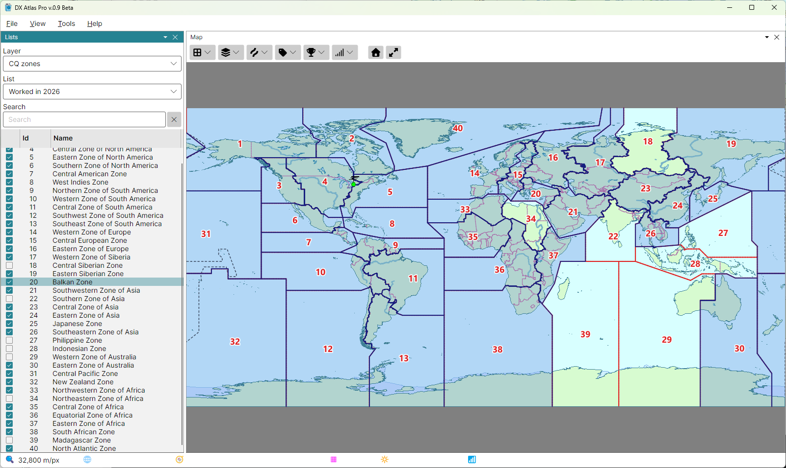

Award Tracking
The lists of the Lists Panel track your progress towards awards: a list is a named set of the items of one layer - DXCC entities, CQ zones, IOTA groups - that you tick as you work or confirm them, and the map paints the items of the list selected.

Award Layers
These layers keep lists:
- DXCC entities, WAE countries and WAS;
- CQ zones, ITU zones (RSGB) and ITU zones (ARRL);
- IOTA groups, ARRL/RAC sections and FFMA grid squares;
- WAP Antarctic bases;
- your own layers; see Create a Custom Layer.
Creating Lists
Create one list for each record you keep. A list holds one flag per item, so worked and confirmed are separate lists, as are bands and modes: "Worked", "Confirmed", "160 m", "CW", or "160 m confirmed".
- pick the layer in the Layer box;
- in the List box, pick New List... and type the list's name;
- tick the checkbox of each item you have; type in the Search box to find an item quickly. On the DXCC layer, typing the callsign of a station you worked finds its entity; see Prefix Search.
The lists are saved as soon as a checkbox changes, in the file Lists.json in the user data
folder, with a backup copy, Lists.json.bak, beside it. Help > Data Folder... opens that
folder.
Award Colouring
While a list is selected, both maps paint its items over the regular map:
- an item with an area - an entity, a zone, an IOTA group's rectangle - is filled semi-transparent and outlined;
- an area too small to see at the current zoom, such as the Vatican, is drawn as a circle too, so it still shows at a world view.
Ticking or clearing a checkbox paints or clears its item at once. With <none> selected, or while the Lists panel is closed, nothing is painted. The items of your own layers are not painted.
The fill and the outline colours are Award Coloring in the Amateur Radio Layers section of the Colors Dialog.
Deleting a List
Pick Delete List... in the List box and confirm it. The list and its ticks are deleted.